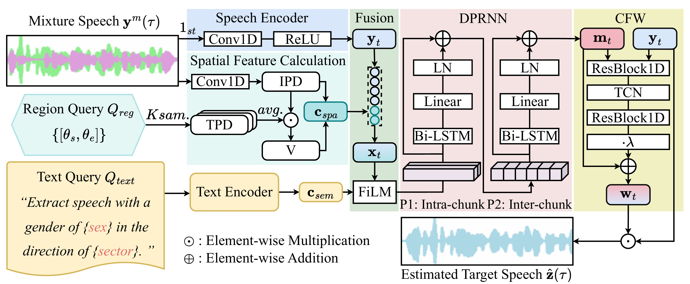

SSDQ framework

The architecture of the proposed SSDQ network, which consists of: (1) Speech Encoder encodes the input mixture speech \(\textbf{y}^0(\tau)\) into frame-level representations \(\textbf{y}_t\) using Conv1D and ReLU layers; (2) Spatial Feature Calculation computes the spatial cue vector \(\textbf{c}_{spa}\) using IPD and TPD derived from spatial samples guided by the Region Query \(Q_{reg}\); (3) Text Encoder encodes the Text Query \(Q_{text}\) into a semantic embedding \(\textbf{c}_{sem}\); (4) Fusion module integrates \(\textbf{y}_t\), \(\textbf{c}_{spa}\), and \(\textbf{c}_{sem}\) using FiLM; (5) Mask Estimation applies a Dual-Path Recurrent Neural Network to model both intra- and inter-chunk dependencies. (6) CFW uses ResBlock1D and TCN to generate a wrapped feature \(\textbf{w}_t\), which is added to \(\textbf{y}_t\); The final target speech \(\hat{\textbf{z}}(\tau)\) is estimated from the wrapped features.